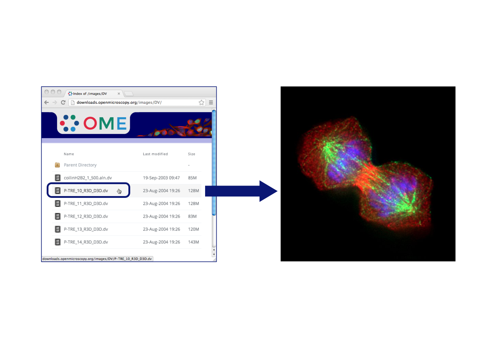
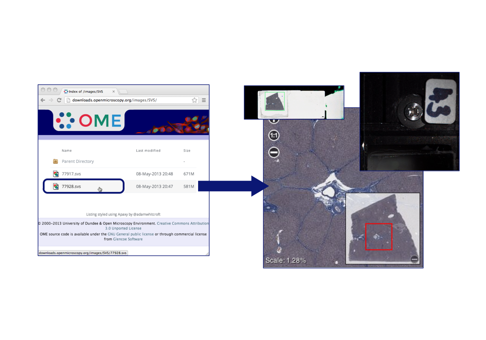
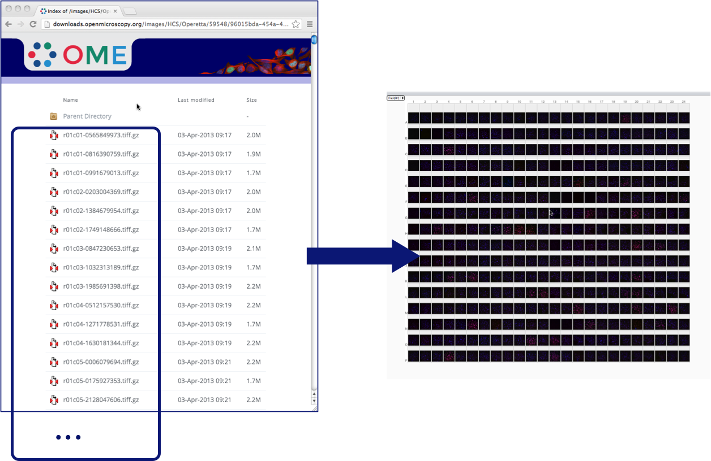
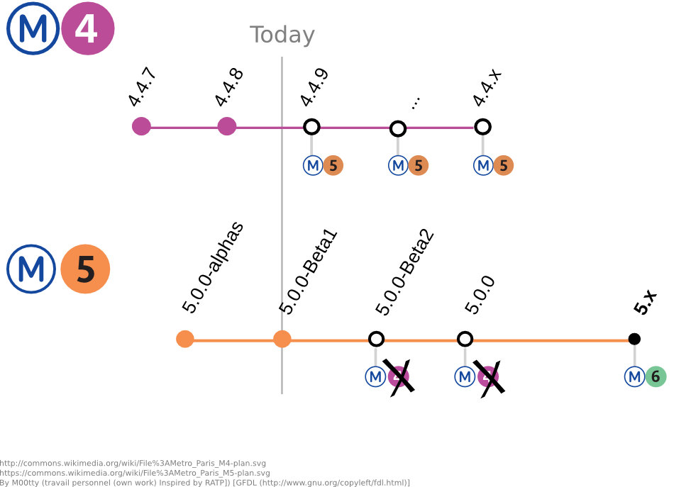

FS Workshop
Paris 2013
How OMERO 5 uses FS to preserve your original image files on OMERO.server.
Outline
- Import Before FS
- What is FS?
- DEMO #1: Importing and Downloading
- Advantages
- What is a Fileset?
- DEMO #2: Moving and Deleting
- Migrating to FS
- Planned Work
Importing Before FS
- client software extracts planes from image files
- server stores and uses large Pixels files
- additionally, original files could be archived
- i.e. data duplication
Client to Server
OMERO 4

Rendering Pipeline
OMERO 4
- clients obtain rendered images from server
- Pixels structure is optimized for reading
- rendering is thus a fast, direct process
Server to Client
OMERO 4

What is FS?
- stores only the original files
- i.e. No data duplication
- clients need only wait for file upload
- no file data corruption on transfer into FS
- client and server compare files to verify clean copy
- Project/Dataset, Screen/Plate hierarchy remains
Client to Server
OMERO 5

Rendering Pipeline
OMERO 5
- managed repository holds uploaded image files
- Bio-Formats extracts planes from image files
- server now needs Bio-Formats for rendering
- Bio-Formats performance much improved
Server to Client
OMERO 5

The Numbers (in secs.)
SVS (~500MB)
| pre-fs | fs | |
|---|---|---|
| import | 53 s. | 36 s. |
| pyramids | 5400 s. | n/a |
| avg. plane view | 0.25 s. | 0.23 s. |
FS in Action
Importing and Downloading
We now demonstrate import and download in OMERO 5.
FS in Action
Importing and Downloading
- file import is fast
- import log
- checksums dialog
- file paths popup
- download files, content intact
No Data Duplication
- OMERO 5 does not create large Pixels files
- no duplication of image data on server
- preserve original data structure
- uploaded image files readable by other software
- need not duplicate image data outside FS
More FS Advantages
- OMERO.server becomes master data repository
- easily share data, reproduce analyses
- protect against data loss on client systems
- each upload has an import log recorded
- Bio-Formats improvements benefit older data
What is a Fileset?
- a set of related files
- Bio-Formats must read them together
- a set of images, arising from those files
- may be just one file and one image
One file produces one image
One file produces several images
Several files produce several images
Fileset Indivisibility
- files must be kept together for Bio-Formats
- must also associate the files' images
- they need not be in the same dataset
Effects of Indivisibility
- cannot break fileset by partially deleting or moving between groups
- repository changes should be via server API
- server prohibits certain acts on partial filesets
- only operations affecting file accessibility
- namely: change group, delete
FS in Action
Moving and Deleting
We now demonstrate move and delete in OMERO 5.
FS in Action
Moving and Deleting
- change group: partial fails
- change group: complete succeeds
- delete: partial fails
- delete: complete succeeds
- split fileset images across datasets
Migrating to FS
Migrating to FS

Migrating to FS
- new OMERO users should try out OMERO 5
- upgrades will be provided between each beta
- and to the final 5.0.0 version, of course
- upgrades from OMERO 4 currently being tested
- process for upgrade to be released after summer
- no near-term plans to allow merging servers!
Planned Work
- detect any file corruption even after upload
- ensure that every file has a checksum noted
- re-validate checksums and report mismatches
- reconsider fileset handling (deletion, etc.)
- server-side re-import recovers image?
Next-Generation FS
- import without Bio-Formats on clients
- all file format scanning done on server
- ability to upload unknown file formats
- server renders images from user-managed directories
- could be from remote network mount
- user need not use importer to upload files
Any Feedback?
- We welcome questions and comments on FS.
- What further work on FS would be most useful?
- Would you like to try out FS at your site?
The managed repository
/home/data/sample$ tree zeiss-lsm-martin/ # Files local to client
zeiss-lsm-martin/
├── 01-01.lsm
├── 01-02.lsm
└── 051215-j-tf.mdb
/OMERO/ManagedRepository/josh_0$ tree . # Files on the server
.
├── 2013-06
│ ├── 17
│ │ ├── 09-02-55.180
│ │ │ ├── 01-01.lsm
│ │ │ ├── 01-02.lsm
│ │ │ └── 051215-j-tf.mdb
│ │ ├── 09-02-55.180.log
Configuring FS
etc/omero.properties
Managed Repository Directory
omero.data.dir=/OMERO/
omero.managed.dir=${omero.data.dir}/ManagedRepository
Configuring FS
etc/omero.properties
Template Paths
omero.fs.repo.path=%user%_%userId%/%year%-%month%/%day%/%time%
Configuring FS
etc/omero.properties
Permitted File Naming
omero.fs.repo.path_rules=Windows required, UNIX required
Configuring FS
etc/omero.properties
Default Checksum Algorithm
omero.checksum.default=SHA1-160
FS in SQL
Find an Image's Fileset
SELECT fileset FROM image WHERE id = ?
FS in SQL
Find Images in Fileset
SELECT name FROM image WHERE fileset = ?
FS in SQL
Find Paths of Files in Fileset
SELECT of.path || of.name FROM originalfile of, filesetentry fse WHERE of.id = fse.originalfile AND fse.fileset = ?
FS in SQL
Find Checksums of Files in Fileset
SELECT of.name, ca.value, of.hash FROM originalfile of, filesetentry fse, checksumalgorithm ca WHERE of.hasher = ca.id AND of.id = fse.originalfile AND fse.fileset = ?